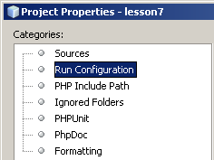
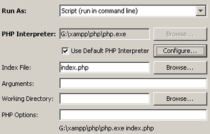
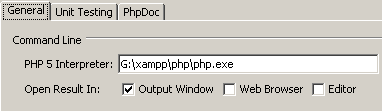
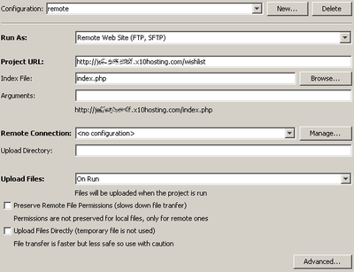

- Choose File > New Project (Ctrl-Shift-N). The New Project wizard opens.
- Choose PHP Application. You create a new PHP project with an empty index.php file.
- In the Name and Location panel, name the project. Set the project's location in the Sources Folder field. Note that you do not have to place the project in your web server's public folder. You can also store NetBeans metadata in a separate folder.
- In the Run Configuration page, set the default run configuration. Select whether to run the application as a local web site, a remote web site, or a command-line script. If you are running the application as a local web site, you can change the URL. If you have the sources in a different folder than your web server's public folder, copy the sources to your web server's public folder.
- In the Frameworks panel, you may select a framework.
For more information, see .
- Choose File > New Project (Ctrl-Shift-N). The New Project wizard opens.
- Choose PHP Application from Existing Sources.
For more information, see .
You can add additional run configurations to a PHP project. You can add an unlimited number of run configurations to a project. To add a run configuration to a project:
- In the Projects window, right-click the project's node and choose Properties. The Project Properties dialog opens. (Note: You can also select the project, go to the dropdown list of run configurations in the IDE's top toolbar and select Customize.)
- In the Categories pane, select Run Configuration. The Run Configuration properties open.
 - To define a new run configuration, click New next to the Configuration
dropdown list.

The Create New Configuration dialog box opens. - Give the configuration a meaningful name.
- In the Run As dropdown box, select whether to run the project as a local web site, a remote web site, or a script.
- Complete the Run Configuration dialog depending on the type of run configuration:
- Local web site
- Remote web site
- Script
For more information, see .
- Select the project in the Projects window, or open any of the project's files in the editor. The project's run configuration appears in the Set Project Configuration field in the top toolbar.
- Select another run configuration in the top toolbar. (Note: You can also select the run configuration in the Project Properties.)
- If the project already exists, add a run configuration
and specify that the run configuration runs as a script.
 - To specify the location of the PHP engine, click the Configure
button next to the Use Default PHP Interpreter box. The PHP
Options dialog opens on the General tab.
 - In the PHP 5 Interpreter field, specify the path to the php.exe file.
- To specify how the script execution results will be shown, select the relevant checkbox in the Open Result In area. The following options are available:
- Output Window. The results of executing a script will appear in the output window in the bottom of the NetBeans IDE window.
- Web Browser. The default browser window will open with the results of executing a script in the form of an HTML file.
- Editor. The results of executing a script will open as an HTML file in the IDE editor window.
- Click OK. The Options dialog box closes and the system returns to the Run Configuration panel.
For more information, see .
To set up a remote PHP application over FTP/SFTP:
If you are creating a NetBeans project for a PHP application on a remote server, or a new project that uses a remote run configuration as default, launch New Project > PHP > PHP Application from Remote Server. The Remote Connection page opens.
If you have an existing project and want to upload it to an FTP server, add a run configuration to the project and specify that the run configuration runs as a remote web site. The Run Configuration dialog opens with Remote Connection fields.
- If you do not have a preconfigured remote connection, click Manage next to the Remote Connections drop down box. The Manage Remote Connections dialog opens. Specify the new connection in this dialog. See .
- Select a remote connection from the Remote Connection drop-down list.
- In the Upload Directory field, enter the name of the subfolder in the initial directory where the source files will be uploaded. The prompt below the field shows the FTP host URL.
- Select whether to upload files manually, on save, or on run.
- Click Finish.
For more information, see .
- Set breakpoints in the files you want to debug. To set a breakpoint, left-click the line number or press Ctrl-F8.
- Right-click the project's node and choose Debug.
- To execute code line-by-line, press F7 (Step In). To cancel line-by-line execution, press Ctrl-F7 (Step Out). To skip to the next breakpoint, press F8 (Step Over). You can use the debugger toolbar instead of function keys.
For more information, see .
- Right-click the project's node in the Projects Window and select Properties. The Properties dialog opens.
- Select the Run Configuration category. The Run Configuration options appear.
- Click the Advanced button. The Advanced Web Configuration dialog appears.
Note: The Advanced button is not available on projects that run as scripts. Also note that you may need to expand the dialog screen to see the Advanced button.
- In the Advanced Web Configuration dialog, click New next to the Path Mapping table to add a Path Mapping.
- Select whether to use the default URL for debugging, to have the IDE ask you for the URL at the beginning of every debug session, or not to open a web browser automatically for each debug session.
- Set the debugger proxy, if any.
For more information, see .
- Go to Tools > Plugins and install the plugin for the framework you want to use.
- Create a new PHP project. In the last page of the New PHP Project wizard, select the framework you want to use. The IDE generates the project with the skeleton for the framework.
- To run a command for the framework, right-click the project's node in the Projects window and select [name of framework] > Run command... You can set a shortcut for this in Tools > Options > Keymap.
For more information, see the relevant screencast in the .
To use PHPUnit:
- Add some possible values to test in your code, using the PHPUnit @assert annotation in comment blocks.
- Right-click the file's node, or the parent Source Files node, in the Projects window and select Tools > Create PHPUnit Tests.
- Either test the entire project, by right-clicking the project's node and selecting Test (Alt-F6), or test an individual file, by right-clicking the file's node and selecting Test (Ctrl-F6). The IDE shows results in the Test Results and Output windows.
You can add code coverage to the test by right-clicking the project's node and selecting Code Coverage > Collect and Display Code Coverage.
You can use the Selenium framework to test a project. Install the Selenium plugin for the IDE. To use Selenium, right-click the project's node and select New > Other > Selenium > Selenium Test Case for PHP. Then right-click the project's node and select Run Selenium Tests.
For more information, see
Color and fonts are changed in general IDE options. Tabs, alignments, spacing, etc can be changed either in general IDE options or for a specific project.
To change color and fonts, go to Tools > Options. The Options dialog opens. Select Fonts and Colors. For help, press Help.
To change tabs, alignments, or spacing:
- Right-click the project's node in the Projects window and select Properties. The Properties dialog opens.
- Select Formatting. The Formatting options appear.
- Select either global formatting options or project-specific formatting options. If you select project-specific formatting options, you can import these settings from another project.
- To change global formatting options, press Edit global options. This opens the Tools > Options > Editor dialog on the General tab. Change to the Formatting tab. The UI for this tab is identical to the UI for project-specific formatting options.
- Select whether to change general options for all languages, including HTML and CSS, or the PHP options.
- If you select the PHP language, choose Tabs and Indents, Spaces, Alignment, Braces, Blank Lines, or Wrapping. You can change a number of options for each of these categories.
- To open the file, press File > Open File... and browse to the file location.
- To run the file, press Shift-F6.
- To debug the file, press Ctrl-Shift-F5.
- Right-click the project's node in the Projects window. The Project Properties dialog opens.
- Under Categories, select Include Path. The Include Path options appear.
- Click Add Folder. The Select Folder(s) dialog box opens.
- Select the relevant folders and click Open. You return to the PHP Include Path panel. The new folder is added to the list of included folders.